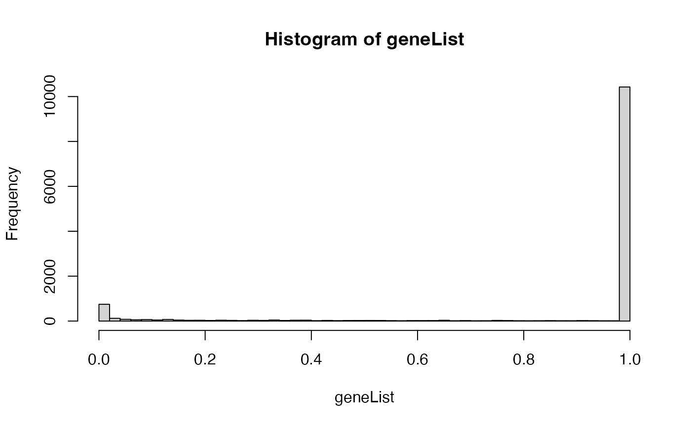

Convenient function to compute p-values from a gene expression matrix.
getPvalues.RdWarping function of "mt.teststat", for computing p-values of a gene expression matrix.
Examples
library(ALL)
data(ALL)
## discriminate B-cell from T-cell
classLabel <- as.integer(sapply(ALL$BT, function(x) return(substr(x, 1, 1) == 'T')))
## Differentially expressed genes
geneList <- getPvalues(exprs(ALL), classlabel = classLabel,
alternative = "greater", correction = "BY")
hist(geneList, 50)
